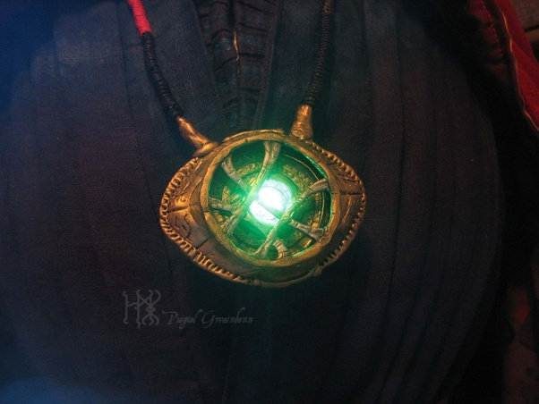

The Time Stone gives the user to manipulate and alter time itself in any way they want. The first appearence of the stone was in the Doctor Strange solor movie. Strange got the time stone when he acquired th Eye of Agamotto. At first he didn't know what the stone could do until he played with it. He then swore to protect the Time Stone with his life. When Kaecilius was terrorizing the the planet. He decided to rewind time to put everything back where they were while fighting Kaecilius. After defeating Kaecilius, Strange decided to stop the evil from the source. Strange traveled to the Dark Dimension, the home of dark magic. He arrived with a giant face in front of him. It turns out the face was Dormammu. The king of the Dark Dimension. "Dormammu, I've come to bargain," he said. Before he went to confront Dormammu, he had a time loop in place so he could revive himself. Supposedly, he stayed in the dimension for years. He finally had made a deal with Dormammu. Thanos had acquired the Time Stone from Strange. He surrendered it to Thanos to save Stark's life. Because from all of the 14 million outcomes he saw, he knew that Stark would have to stay alive to win the "Infinty War."
By Marvel Cinematic Universe Wiki & Stone image by Pinterst CC-BY